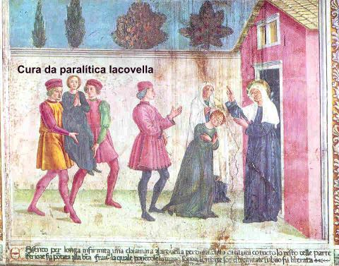
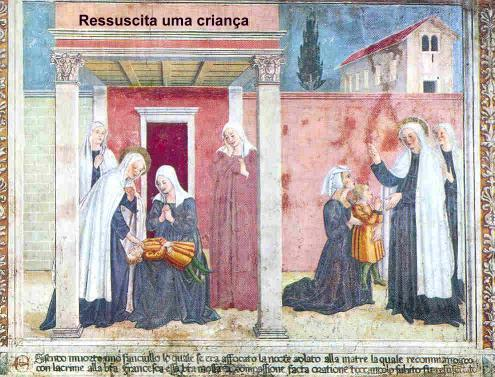
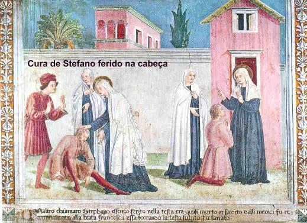
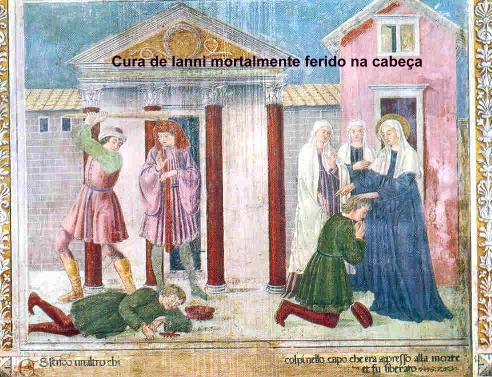
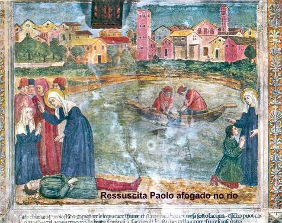
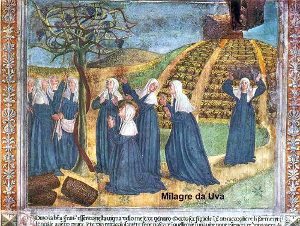
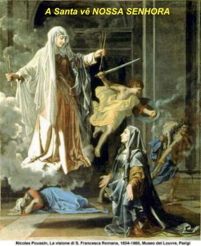
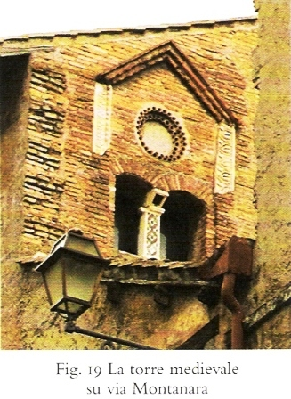

"DERRADEIRAS PALAVRAS?
Meditando sobre todos os acontecimentos descritos neste Site, não é difícil vislumbrar a intenção do SENHOR de utilizar a piedosa e dedicada Francisca na missão de se tornar um admirável exemplo para a humanidade de todas as gerações.
O inferno e os demônios sempre foram considerados por uma razoável quantidade de pessoas como ficção, como um ardil para atrair os fieis a serem mais piedosos e honestos, infundindo-lhes o medo, a fim de terem receio de serem apoderados pelos espíritos malignos. Muitos não acreditam na sua existência. Também o Purgatório nunca recebeu a necessária atenção de muita gente, inclusive existem religiões que não aceitam e o classificam como invenção dos católicos.
Na verdade, como todos nós sabemos, os dois existem e são os executores da Justiça Divina. São dois locais sem apelação, e onde a humanidade pecadora paga a sua dívida moral com o CRIADOR, dívida temporal ou eterna.
Por outro lado, a senhora Francisca Ponziani, desde a sua infância, revelou um profundo, ardente e dedicado amor ao SENHOR, através de suas orações, de suas renúncias, de sua misericordiosa assistência aos mais necessitados e pelo seu empenho pessoal, através do sacrifício e até de mortificações, revelando a grandeza de seu dedicado amor, para consolar o Coração Divino por causa dos pecados da humanidade.
Então o SENHOR escolheu Francisca, dotando-a de uma infinidade de virtudes e dons, realizando através da sua intercessão, uma quantidade extraordinária de milagres, em benefício dos pobres e menos favorecidos, fazendo-a mais piedosa e admirada por todos. E também, DEUS determinou o momento de permitir uma satânica movimentação do inimigo, para que através de sua serva fosse consumado um testemunho inquestionável da existência do Purgatório e do inferno com a visita que ela fez, conduzida pelo Arcanjo Rafael e também, através dos muitos combates contra o demônio ao longo de dez anos de sua existência. NOSSO SENHOR autorizou que satanás agredisse Francisca, mas controlou a ação do maligno, não permitindo que as maldades ultrapassassem os limites físicos humano. A vinda do Arcanjo que permaneceu durante 24 anos na companhia da serva do SENHOR, foi sem dúvida um fiel companheiro e precioso defensor, mas no plano Divino, não seria necessário, por que a Vontade de DEUS é magnânima e suficiente para interromper aqueles ataques ou qualquer tipo de agressão ou maldade, no mesmo instante ou quando ELE quisesse. Então, a vinda do Arcanjo teve outro sentido, aquele de materializar o auxilio do SENHOR no momento crucial, na hora certa, realçando que o SENHOR está presente em nossa vida e que jamais deixa de ajudar, aqueles que crêem e procuram amá-LO suplicando a sua generosa, inefável e tão eficaz proteção.
Diante destas realidades inquestionáveis, é de grande valor, na continuação da nossa reflexão, desfolhar as páginas de nossa existência colocando presente no raciocínio, acontecimentos do passado que nos convidam a um esforço mais profundo e sincero de aproximação com DEUS, a fim de neutralizar e apagar a força do mal eventualmente praticado. O conteúdo aqui apresentado quer estimular a conversão do coração, seja através do exercício de penitências e mortificações, seja de uma maior e cuidadosa atenção com o SENHOR, do acréscimo das orações, da maior participação nas Santas Missas, da frequência aos Sacramentos, na consciente busca de maior santidade, burilando e polindo as próprias qualidades pessoais por meio das Sagradas Escrituras, ou da leitura de livros e Sites fundamentados na moral cristã, e sobretudo, com um viver cotidiano cada vez mais exemplar, modelado na Santíssima Vontade Divina. Por que assim procedendo, essa será a resposta de amor de um coração sinceramente arrependido e desejoso de revitalizar abissalmente o seu relacionamento de amizade com DEUS, ocultando e esquecendo o passado, e deixando florescer maravilhosamente, a exuberância de um amor puro, sincero e dedicado.
Desse modo, desejamos que nosso esforço para produzir este Site, com conteúdo autêntico e de acordo com a sagrada revelação, possa levar a verdade a todos os corações de boa vontade, ensejando-lhes desfrutar de todos os benefícios que poderão advir e, divulgar para outros, que também poderão ser favorecidos, por que verdadeiramente esta é a Vontade do SENHOR .
Complementando as informações sobre a vida da senhora Ponziani, a mais romana de todas as Santas, apresentamos a seguir outras imagens dos milagres realizados pelo SENHOR através da intercessão piedosa e repleta de afeto da serva de CRISTO.







"TOR DE SPECCHI"
(TORRE DO ESPELHO)
E por último, vamos oferecer um necessário esclarecimento sobre o significado do nome do Mosteiro das Irmãs Oblatas,

relatando o por que do nome: MOSTEIRO TORRE DO ESPELHO.Em 1433, Francisca com autorização do Papa Eugênio IV alugou uma casa no centro de Roma, a qual posteriormente comprou, para ser a sede da Congregação que ela tinha acabado de fundar. Evidentemente necessitava de um endereço como referência e para atender a todas as pessoas interessadas. A casa alugada pertencia a família Clarelli e ficava entre a colina Capitolino e o Teatro di Marcello, no Bairro Campitelli. Naquela época, conforme já abordamos neste Site, Roma atravessava um período difícil da sua história, dilacerada pela guerra entre os nobres que visavam o poder, desencadeando uma terrível fome, carestia de tudo e uma abominável decadência moral, numa cidade emporcalhada, insegura, sombria, malcheirosa e cheia de mendigos, com a peste dizimando famílias inteiras, abrindo imenso espaço a morte, com os ataques frequentes do conflito armado, tornando a vida dos mais fracos, perigosa e incerta. Por isso, as construções, de um modo geral, edificavam uma torre na parte mais elevada, para vigiar e controlar qualquer movimentação suspeita na cidade. A casa alugada por Francisca também tinha a sua torre, e nela existiam duas janelas separadas por uma coluna de alvenaria. Em cima da dupla janela havia um amplo rebaixamento circular em tijolo rígido visível para a Rua do Teatro di Marcello. Neste rebaixamento circular haviam molduras interiores também redondas feitas em argila, com ocos fixados em círculo, como decoração, imitando o formato de um espelho com a sua moldura. Em consequência, desde a época de Francisca, era comum fazer referência: "a casa da torre do espelho". Na continuidade, esta casa se transformou na residência definitiva da Congregação e por conseguinte, no Mosteiro das Irmãs Oblatas, permanecendo a denominação de Mosteiro Torre do Espelho, "Tor de Specchi".
CONVITE
Este Site foi construído pelo APOSTOLADO DOS SAGRADOS CORAÇÕES. Clique aqui ou no endereço abaixo para visitar o nosso PORTAL. Nele encontrará uma apreciável quantidade de Sites sobre o CRIADOR, o ESPÍRITO SANTO, JESUS DE NAZARÉ, sobre NOSSA SENHORA, os ANJOS do SENHOR e Sites que apresentam a Vida e Obra de diversos SANTOS. Todos eles elaborados com cuidadosa dedicação, essencialmente fundamentados na Sagrada Escritura, na Tradição Cristã, nas Manifestações Sobrenaturais e na Vida e Obra dos Santos, com a intenção maior de somente informar a Verdade.
http://www.apostoladosagradoscoracoes.com/
"E-MAIL"
Desejando comunicar-se conosco, por favor utilize o E-mail abaixo:

"FIRMAS DE BUSCAS"